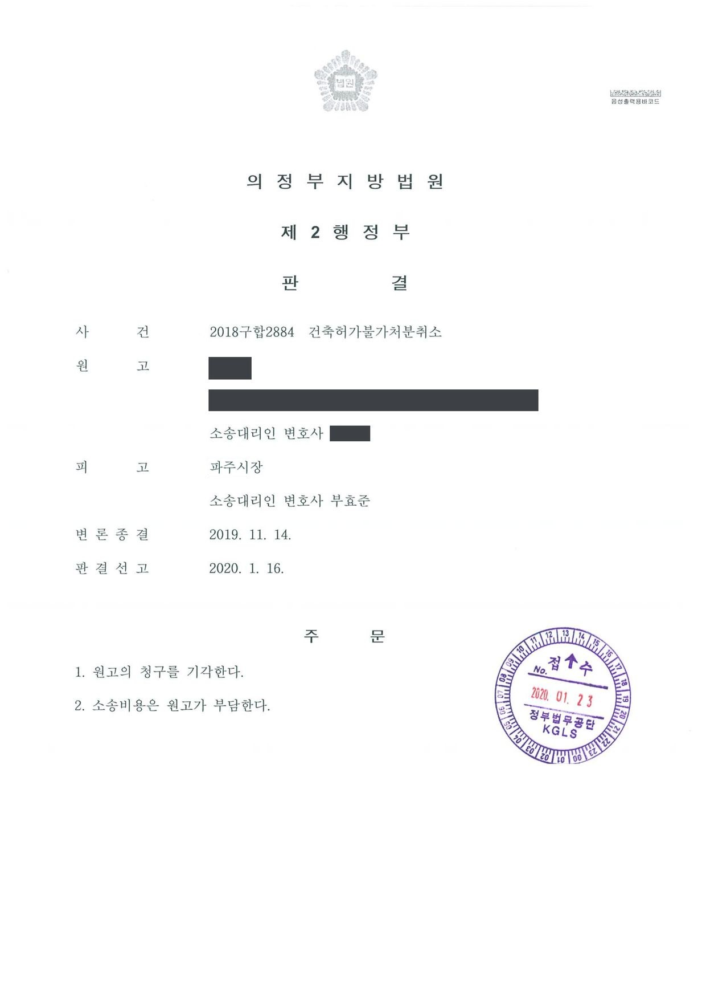

장례시설 건축허가 불허가처분 취소소송
의정부지방법원 2018구합2884 · 담당변호사 부효준
판결문

사건의 요지
공공체육시설에 인접한 토지에 장례시설을 신축하기 위한 건축허가 신청을 불허한 처분에 관하여, 주변 환경과 공익을 이유로 한 불허가가 재량권을 일탈·남용한 것인지가 다투어진 사건입니다.
사건의 주요 내용
원고는 2018년 7월 도시지역 중 자연녹지지역에 있는 농지(2,364㎡) 위에 지하 1층·지상 1층, 연면적 약 1,047㎡, 건폐율과 용적률 각 19.95%, 주차 25대 규모의 장례시설 1동을 신축하기 위하여, 개발행위허가와 농지전용허가·협의가 포함된 건축허가를 신청하였습니다. 원고는 앞서 이 땅에 다세대주택 24세대의 건축허가를 받았다가 2018년 4월 스스로 취소를 신청하였고, 그 뒤 장례시설 건축허가를 신청한 것이었습니다.
지방자치단체(처분청)는 2018년 8월 ① 신청지가 공공체육시설인 체육공원에 인접해 시민의 여가생활에 지장을 주고 이용자에게 거부감을 줄 수 있어 건축법의 목적에 맞지 않고, ② 주변에 다수의 아파트 단지와 학교가 있어 미관 훼손과 생활환경 침해가 우려되며 주변 토지의 이용 형태와도 맞지 않아 국토계획법상 개발행위허가 기준에 부적합하고, ③ 농지전용 목적의 실현성이 낮고 사업 규모에 비해 전용 면적이 부적정하여 농지법 시행령 제33조에 부적합하다는 이유로 불허가처분을 하였습니다. 원고는 그 취소를 구하는 소송을 제기하였고, 부효준 변호사는 피고 처분청을 대리하였습니다.
쟁점
- 개발행위허가와 농지전용허가가 의제되는 장례시설 건축허가가 재량행위로서 그 요건까지 아울러 고려하여 불허가할 수 있는지
- 체육공원·아파트·학교가 인접한 자연녹지지역의 농지에 장례시설을 짓는 것이 주변 환경과 조화를 이루지 못한다고 본 처분청의 판단이 재량권을 일탈·남용한 것인지
- 소규모 장례시설을 위하여 2,364㎡의 농지를 전용하는 것이 농지법 시행령상 전용 면적의 적정성 기준에 맞는지
원고의 주장
- 장례식장은 혐오시설이 아니고, 이용 형태상 장례시설 이용자와 체육공원 이용자가 마주칠 일이 없으며, 신청지와 체육공원 사이에 이미 큰 활엽수가 있어 어느 정도 차폐되고 차폐목을 추가로 설치할 수도 있다.
- 신청지는 주거·상가 밀집지역이 아니고 주변에 이미 주유소, 자동차정비업소, 대형 이동통신 안테나, 가스충전소 등이 있으며, 장례시설의 건폐율과 용적률도 조례 기준 안에 있다.
- 다른 장례시설에 대하여 건축허가를 한 사례와의 형평도 고려되어야 하므로, 이 사건 불허가처분은 재량권을 일탈·남용한 것이다.
부효준 변호사의 주장
- 장례시설이 혐오시설이 아니더라도 신청지는 농지법상 농지이고 장례시설 건축허가를 받으면 농지전용허가가 의제되므로, 건축허가 여부는 국토계획법상 개발행위허가 기준과 농지법상 농지전용허가 기준까지 아울러 고려하여 판단해야 하며 이는 처분청의 재량에 속한다고 주장하였습니다.
- 설치하려는 장례시설은 용적률 19.95%의 소규모인 반면 전용하려는 농지는 2,364㎡에 이르러 지나치게 넓으므로, 전용 면적이 전용목적사업의 실현을 위하여 적정하다고 볼 수 없어 불허가처분이 적법하다고 반박하였습니다.
- 신청지는 체육공원과 출입구를 같은 도로에 두고 있고 300m 안에 아파트 단지, 500m 안에 여러 학교가 있어 주민 생활환경 침해의 우려가 있으며, 주변이 대부분 농지여서 장례시설은 주변 환경·경관과 조화를 이루기 어렵다고 주장하였습니다.
법원의 판단
법원은 대법원 판례에 따라, 건축허가를 받으면 개발행위허가와 농지전용허가가 의제되므로 건축허가 여부는 그 요건까지 아울러 고려하여 결정할 수 있고, 개발행위허가와 농지전용허가는 요건이 불확정개념으로 규정되어 행정청의 재량판단 영역에 속하므로 이를 수반하는 건축허가도 재량행위이며, 재량권 일탈·남용은 처분의 효력을 다투는 사람이 주장·증명하여야 한다는 법리를 전제로 하였습니다.
그리고 현장검증 결과 등을 토대로, 인접한 체육공원을 많은 시민이 상시 이용하는데 장례시설과 출입구가 같은 도로에 인접해 있고 주차장과 진입로가 협소하여 이용자의 불편과 여가 환경 저해가 우려되는 점, 300m 안에 여러 아파트 단지와 500m 안에 여러 학교가 있어 생활환경 침해의 우려가 있다고 본 처분청의 판단이 크게 불합리하지 않은 점, 주변이 대부분 농지여서 장례시설이 주변 환경·경관과 조화되기 어렵고 자연녹지지역에 장례시설을 건축할 불가피한 필요성도 보이지 않는 점을 들었습니다.
농지전용과 관련하여서는, 용적률 19.95%의 소규모 장례시설을 위하여 2,364㎡의 농지를 전용하는 것은 전용 면적이 전용목적사업의 실현을 위하여 적정하다고 보기 어렵고, 건폐율·용적률의 변경은 설계변경을 수반하므로 보완 요구 없이 불허가하였더라도 위법하지 않다고 하였습니다. 원고가 신청지에 장례시설을 짓기 위하여 특별히 비용과 노력을 들였다고 볼 자료가 없어 침해되는 사익이 공익보다 크지 않고, 다른 장례시설의 허가 사례는 지목·용도·용도지역 등이 달라 형평에 반하지 않는다고 보아 원고의 청구를 받아들이지 않았습니다.
한편 국토계획법 제56조에 따른 개발행위허가 및 농지법 제34조에 따른 농지전용허가ㆍ협의는 금지요건ㆍ허가기준 등이 불확정개념으로 규정된 부분이 많아 그 요건ㆍ기준에 부합하는지의 판단에 관하여 행정청에 재량권이 부여되어 있으므로, 그 요건에 해당하는지 여부는 행정청의 재량판단 영역에 속한다. 나아가 국토계획법이 정한 용도지역 안에서 토지의 형질변경행위ㆍ농지전용행위를 수반하는 건축허가는 건축법 제11조 제1항에 의한 건축허가와 위와 같은 개발행위허가 및 농지전용허가의 성질을 아울러 갖게 되므로 이 역시 재량행위에 해당하고, 그에 대한 사법심사는 행정청의 공익판단에 관한 재량의 여지를 감안하여 원칙적으로 재량권의 일탈이나 남용이 있는지 여부만을 대상으로 하는데, 그 판단 기준은 사실오인과 비례ㆍ평등의 원칙 위반 여부 등이 된다. 이러한 재량권 일탈ㆍ남용에 관하여는 그 행정행위의 효력을 다투는 사람이 주장ㆍ증명책임을 부담한다(대법원 2017. 10. 12. 선고 2017두48956 판결 등 참조).
의정부지방법원 2018구합2884 판결 이유 '2. 다. 관련 법리'
이 사건 신청지는 국토계획법 제36조 제1항, 제2항, 구 국토계획법 시행령 제30조 제1항 제4호 다목의 자연녹지지역, 즉 '도시의 녹지공간의 확보, 도시확산의 방지, 장래 도시용지의 공급 등을 위하여 보전할 필요가 있는 지역으로서 불가피한 경우에 한하여 제한적인 개발이 허용되는 지역'이다. 원고가 이 사건 신청지에 설치하려는 시설은 장례시설인데 위와 같은 주변 지역 토지의 이용실태(이 사건 신청지 주변에 병원이나 요양시설 등도 없어 보인다) 등에 비추어 볼 때 이 사건 신청지에 장례시설을 건축하여야 할 불가피한 필요성이 있어 보이지도 않는다.
의정부지방법원 2018구합2884 판결 이유 '2. 마. 판단 1) 라)' 부분
원고가 장례시설을 신축하기 위하여 이 사건 신청지를 취득한 것은 아니고 이 사건 신청지에 장례시설을 신축하기 위하여 특별히 비용과 노력을 들였다고 볼 만한 주장이나 자료도 없어서 이 사건 처분으로 인하여 원고에게 재산권 침해 등의 불이익이 크게 발생한다고 보기도 어렵다. 나아가 이 사건 처분으로 원고에게 어느 정도 침해되는 이익이 있더라도, 무분별한 개발에 의하여 해당 토지의 목적 등이 훼손되지 않도록 주변 환경과의 관계를 고려하여 체계적인 개발행위를 유도함을 목적으로 하는 국토계획법령의 취지와 농업생산과 환경보전의 기반 및 자원인 농지를 보전함을 목적으로 하는 농지법의 취지 및 그로써 달성하려는 공익에 비추어 볼 때 원고의 침해되는 사익이 공익보다 크다고 볼 수 없다.
의정부지방법원 2018구합2884 판결 이유 '2. 마. 판단 3)' 부분
※ 판결 이유 가운데 이 사건의 판단 기준이 된 부분을 그대로 옮긴 것으로, 당사자 이름 등은 가렸습니다.
이 사건이 보여 주는 것
장례시설 건축허가처럼 개발행위허가·농지전용허가가 의제되는 건축허가는 재량행위이고, 법원은 행정청의 공익 판단을 존중하여 재량권 일탈·남용이 있는지만 심사합니다. 건폐율·용적률이 조례 기준 안에 있고 시설이 법령상 혐오시설이 아니라는 사정만으로는 불허가가 위법하게 되지 않습니다.
특히 농지에 시설을 지으려는 경우에는 '전용 면적이 사업 규모에 비해 적정한가'가 독립된 심사기준이 되므로, 소규모 시설을 위해 넓은 농지를 전용하는 계획은 그 자체로 불허가 사유가 될 수 있습니다. 신청인 쪽에서는 사업의 필요성과 진정성, 그 땅을 위해 들인 비용과 노력을 구체적으로 입증하지 못하면 침해되는 사익이 공익보다 크다고 인정받기 어렵습니다.
관련 법령건축법 제11조 제1항, 제5항 · 국토의 계획 및 이용에 관한 법률 제36조, 제56조, 제58조 제1항 · 구 국토의 계획 및 이용에 관한 법률 시행령 제30조, 제56조 제1항 [별표 1의2] · 농지법 제3조, 제4조, 제34조 · 농지법 시행령 제33조 제1항 · 민원 처리에 관한 법률 제22조 제1항
관련 단어장례시설장례식장 건축허가건축불허가처분개발행위허가농지전용허가인허가 의제자연녹지지역재량행위재량권 일탈·남용체육공원 인접국토계획법 제58조농지법 시행령 제33조처분 적법
이 사건의 소개 글은 인스타그램(@lawyer.boo)에도 있습니다.
비슷한 처분을 받으셨다면
행정처분은 처분이 있음을 안 날부터 90일 이내에 행정심판이나 취소소송으로 다투어야 하고, 기간이 지나면 돌이킬 수 없는 처분은 집행정지를 서둘러야 합니다. 처분서를 받은 날짜부터 확인해 드립니다.